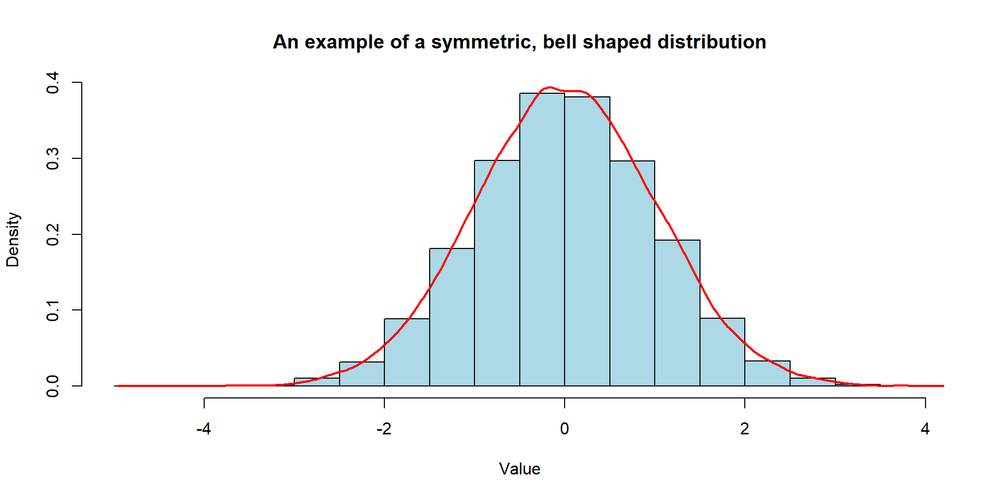
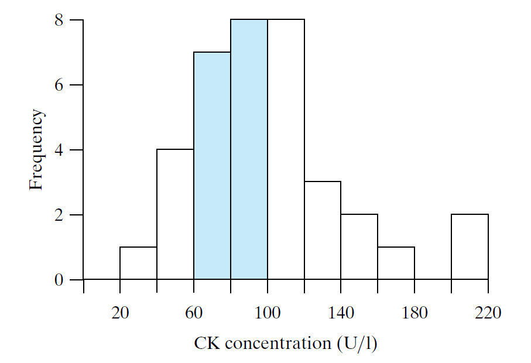
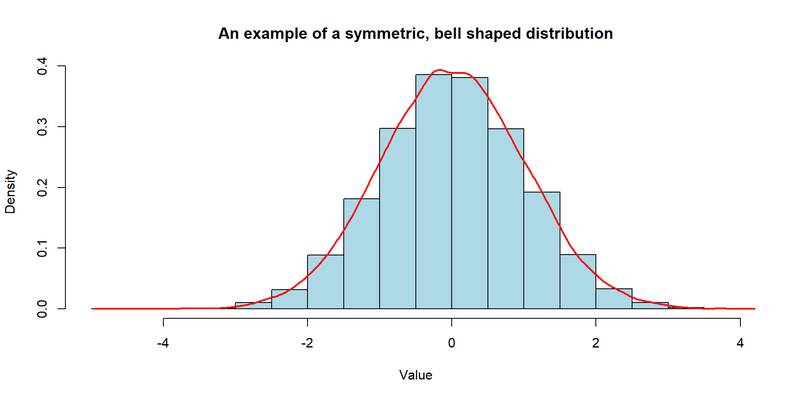
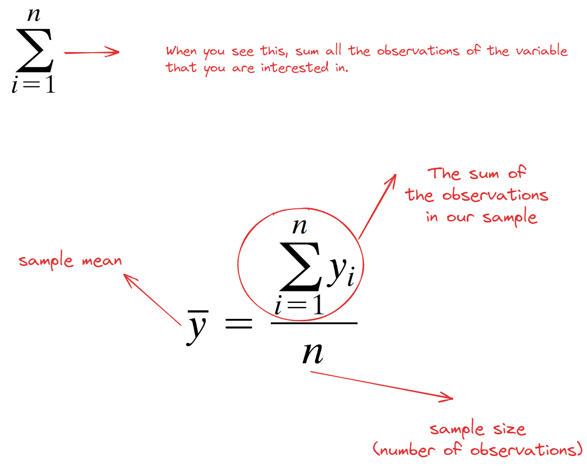
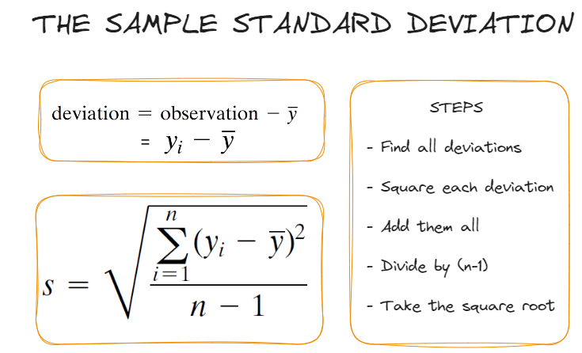
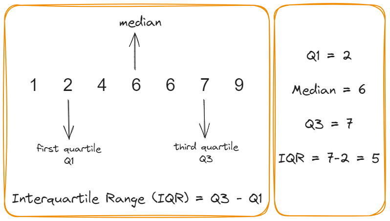

STAT 218 - Week 2, Lecture 3
January 18th, 2024
In the last 2 weeks, we
And OF COURSE
Today we will see some examples to understand
A histogram is like a visual story in two parts.
Let’s elaborate yesterday’s example

The shape of a distribution can be represented by a smooth curve that provides an approximation of the histogram.

To understand the center or typical value of a data set, we calculate
We also call these as “Central Tendency”
Tip
Remember we employed a symbolic convention to differentiate between a variable and an observed value of that variable.
We now denote
We calculate the mean by using this formula
| Measures of Center | Data and Calculation | Result |
|---|---|---|
| Mean | (2+4+6+6+22)/5 | 8 |
| Median | 2,4,6,6,22 | 6 |
| Mode | 2,4,6,6,22 | 6 |
Warning
Let’s assume we managed to collect data from our squirrels on campus :) Our class was divided into three groups, and each group measured the weights (lbs) of 10 squirrels. Here are the results:
Group 1: 1.25, 1.25, 1.25, 1.25, 1.25, 1.25, 1.25, 1.25, 1.25, 1.25
Group 2: 1.0, 1.0, 1.0, 1.0, 1.0, 1.5, 1.5, 1.5, 1.5, 1.5
Group 3: 1.0, 1.4, 1.2, 1.4, 1.1, 1.3, 1.6, 1.0, 1.2, 1.3
Dr. Demirci mentioned that looking at these numbers is so confusing. Can you please calculate the sample mean for them to summarize this data?
All these groups calculated the same mean, which is 1.25 lbs. Dr. Demirci seemed not so happy with this number.
Range is one of the measures of dispersion indicating the difference between largest and smallest observations in a sample.
Let’s calculate range
Warning

